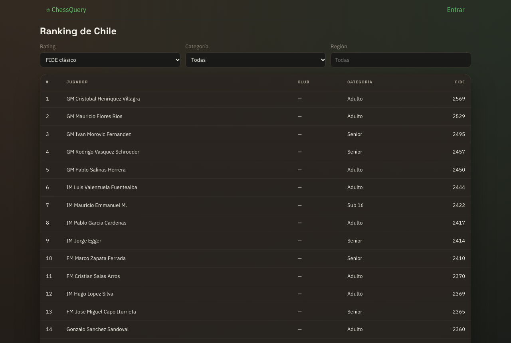

Estructura, últimas implementaciones y lo que falta para los despliegues en la nube y las demos de All In Chile 2026.
En una línea: la v3 ya corre completa en local, con la arquitectura cloud de destino (bus SNS/SQS, identidad delegada, privacidad por diseño, ETL FIDE con datos reales) y con la infraestructura escrita como código. Falta conectar las cuentas de AWS y construir torneos, partidas y notificaciones.
Rama feat/local-ready · 7 commits · 89 archivos · 84 tests en verde
ChessQuery es la plataforma chilena de ajedrez competitivo: SaaS para que los clubes gestionen torneos presenciales sin papel y un perfil gratuito para jugadores con todos sus ratings, ranking y progreso. Su diferenciador es dar el primer rating al jugador no federado (clubes y colegios) e integrarlo con los datos oficiales de FIDE y de la federación.
Fuente: lista combinada oficial de FIDE (players_list_foa.txt, 27-09-2026), federación CHI. Activos con rating: 1.828. Titulados: 6 GM, 15 IM, 56 FM, 34 CM, 3 WIM, 10 WFM, 7 WCM. Es solo la punta federada: los jugadores de club y colegio no aparecen en ninguna lista, y ese es el mercado principal de ChessQuery.
| Tema | Antes (v2 / inicio de la v3) | Ahora |
|---|---|---|
| Despliegue | Una sola task Fargate de 4 vCPU / 8 GB con 10 contenedores, creada a mano con la CLI (~US$144/mes on-demand) | Terraform con un servicio por microservicio (Fargate ARM64), CloudFront, RDS y alarmas; validado |
| Mensajería | RabbitMQ (con contraseña), dentro de la task | SNS + SQS con filter policy y DLQ; sin contraseña; LocalStack en local |
| Identidad | Supabase Auth + gateway propio (v2) | Microsoft Entra External ID (Google federado), PKCE; la app no guarda contraseñas |
| Privacidad | RUT y fecha de nacimiento de terceros en claro; fusión automática por nombre | Hash de RUT, solo año de nacimiento, menores abreviados, exportar/eliminar cuenta, lista de supresión |
| Datos | ETL con datos simulados | ETL FIDE real: 4.192 jugadores importados en ~2 s; ranking público con títulos |
| Pieza | Estado | Comentario |
|---|---|---|
Servicio users (jugadores, ranking, clubes, roster, amigos, privacidad) | Listo local | 28 tests, cobertura 94 % |
| Web (jugador + organizador + ranking público) | Listo local | 17 tests con axe-core (accesibilidad AA) |
| ETL FIDE | Listo local | 12 tests, cobertura 99 %; listo para Lambda |
| Infraestructura Academy (Terraform) | Escrita y validada | Falta apply: requiere credenciales del Learner Lab |
| Cuenta AWS propia (API Gateway, OIDC GitHub, Budgets) | Pendiente | Diseñada (ADR-0002); falta configurar la cuenta |
Servicios tournament, game, notifications | Pendiente | Pasos 2 a 4 del plan |
Monorepo con tres lenguajes y un solo pipeline de CI: Java 21 / Spring Boot 3.5 (servicios), Python 3.12+ (ETL) y React 18 + TypeScript (web).
ChessQuery/
├── pom.xml aggregator Maven (Boot 3.5, Spring Cloud AWS, Jib, JaCoCo)
├── libs/
│ ├── common/ errores REST, ChessEvent, EventPublisher (SNS), idempotencia
│ └── auth-starter/ resource server OIDC, @CurrentUser, sub → playerId
├── services/
│ └── users/ jugadores, ratings, ranking, club + roster, amigos,
│ privacidad (export · supresión · ¿eres tú?), vistas públicas
├── etl/ importador FIDE → S3 (raw/staged/manifest) → SNS rating.updated
├── apps/web/ SPA React: jugador, organizador y ranking público (/ranking)
├── packages/ui-lib/ design system oscuro con contraste AA validado en tests
├── infra/
│ ├── docker-compose.yml Postgres 16 · LocalStack 4.14 (SNS/SQS/S3) · Mailpit
│ ├── localstack/init/ topología local del bus y buckets
│ └── terraform/ bootstrap · modules/{network,data,ecs-service,edge,messaging,
│ observability} · envs/academy
├── docs/
│ ├── adr/ 0001 arquitectura v3 · 0002 despliegue AWS de bajo costo
│ ├── events.md catálogo de eventos (fuente de verdad)
│ └── prototipo/ prompt del agente de prototipos
├── Makefile local-up · users · web · etl-fide-local · test · image · tf-check
└── .github/workflows/ci.yml Java · ETL · Web · Terraform · Trivy
@CurrentUser), nunca del body ni de la URL. Ser organizador significa ser dueño de un club; no hay rol autodeclarado.{eventId, eventType, timestamp, payload} en el tópico SNS chess-events; una cola SQS por consumidor con DLQ; consumidores idempotentes. Todo evento nuevo se documenta en docs/events.md antes de programarlo.{status, error, message, timestamp}.AWS_ENDPOINT_URL del entorno (LocalStack en local, rol IAM en la nube).| Servicio | Veredicto | Uso y motivo |
|---|---|---|
| Entra External ID | Se mantiene | Excepción no-AWS justificada: ya integrado, tier gratuito amplio; la app no maneja contraseñas. |
| ECS Fargate | Núcleo | Un servicio por microservicio, ARM64 (~20 % más barato), escala a 0 fuera de horario. |
| SNS + SQS | Implementado | Reemplaza a RabbitMQ/Amazon MQ (~US$25 fijos/mes → ~US$0–1). Sin contraseña de broker. |
| API Gateway HTTP API | Cuenta propia | Authorizer JWT + throttling a US$1 por millón, en vez de ALB + WAF (~US$25/mes). ALB solo en Academy. |
| S3 + CloudFront | En Terraform | SPA privada con OAC; caché de las vistas públicas; HTTPS. |
| Lambda | ETL listo | Solo cargas cortas o programadas (ETL, sync de ratings, emails). No para los servicios Spring. |
| CloudWatch + Budgets | En Terraform | Logs de 14 días, alarmas (5xx, targets, DLQ, disco RDS). Budgets en la cuenta propia. |
| EC2 | No | Solo opcional como fck-nat; acceso operativo por ECS Exec, sin bastión. |
| AppSync Events | Paso 3 | Tiempo real del tablero: pub/sub gestionado con auth OIDC de Entra; sin ALB ni sticky sessions. |
Todo en la rama feat/local-ready (sin push). Cada bloque terminó con las suites en verde.
| Commit | Qué incluye | Verificación |
|---|---|---|
ec434d6Build e imagen | Corrige el typo que rompía la compilación; Lombok explícito (compila en JDK 21 y 24); JaCoCo 0.8.13; Jib (imagen arm64/amd64, usuario no-root); usernames de Lichess/Chess.com validados y codificados antes de llamar a las APIs externas. | Contenedor arranca en 3,8 s · /actuator/health 200 · /api/users/me sin token → 401 |
2870661IaC | ADR-0002 y Terraform: bootstrap del estado (S3 con locking nativo), módulos de red sin NAT, datos (RDS con contraseña gestionada por RDS), servicio ECS genérico, borde (CloudFront + S3 + ALB), observabilidad, entorno Academy con LabRole. Job de Terraform en CI. | terraform validate OK (v1.16.4) |
3457cbcBus SNS/SQS | EventPublisher sobre SNS con atributo eventType; consumidores @SqsListener; LocalStack reemplaza a RabbitMQ y MinIO; módulo Terraform messaging (colas, filter policy, DLQ y alarma). | Test de contrato contra SNS/SQS reales (LocalStack) y test de punta a punta hasta PostgreSQL |
e7d7a30Privacidad | Migración V2: año de nacimiento, hash HMAC del RUT, trazabilidad de fuente, consentimiento parental, lista de supresión. Match federado solo por identificadores; "¿eres tú?" en vez de fusión por nombre. Endpoints públicos, exportar datos y eliminar cuenta. | Casos de integración: menores abreviados, sin PII, supresión que el ETL respeta |
f11fb01ETL FIDE | Parser de la lista oficial (columnas desde el encabezado), pipeline S3 raw/staged/manifest, diff mensual, lotes de 200 a SNS; ranking por rating FIDE. | Lista real: 9.271 leídos, 4.192 publicados en 21 lotes, DLQ vacía |
cc78721Web pública | Ruta /ranking sin login con selector de rating; títulos FIDE de punta a punta. | Títulos idénticos a FIDE; axe sin violaciones |
8eef172DX | Makefile con los comandos del día a día; README actualizado. | make local-up, tf-check, test-etl |

/ranking corriendo en local con la lista FIDE real (datos públicos de FIDE). Los menores sin cuenta aparecen con el apellido abreviado, como el puesto 7.| Módulo | Tests | Cobertura / gate |
|---|---|---|
libs/common | 15 (incluye contrato SNS→SQS) | ≥ 90 % ✓ |
libs/auth-starter | 12 | ≥ 90 % ✓ |
services/users | 28 (incluye PostgreSQL + LocalStack reales) | 94 % |
etl | 12 | 99 % |
apps/web | 17 (render + axe-core + contraste AA) | — |
| Exigencia | Cómo lo resuelve ChessQuery hoy | Estado |
|---|---|---|
| Minimización | De terceros solo se guarda el año de nacimiento y un hash HMAC del RUT (el pepper vive fuera de la BD); nunca la fecha ni el RUT en claro. | Hecho |
| Calidad del dato | Match solo por identificadores (id federativo, FIDE id, hash de RUT). Se eliminó la fusión automática por nombre (homónimos); ahora es una sugerencia "¿eres tú?". | Hecho |
| Niños, niñas y adolescentes | 26,5 % de los federados tiene 18 años o menos. En vistas para terceros, los menores sin cuenta (o menores de 14 sin consentimiento parental) aparecen con el apellido abreviado. | Hecho Falta flujo de consentimiento |
| Acceso y portabilidad | GET /api/users/me/export descarga un JSON con todo lo del titular. | Hecho |
| Supresión y oposición | DELETE /api/users/me anonimiza, borra amistades, emite player.deleted y registra los identificadores en la lista de supresión: el ETL no vuelve a importarlos. | Hecho |
| Trazabilidad | Cada dato externo guarda fuente, URL y período ("FIDE · 2026-10"). | Hecho |
| Responsabilidad demostrada | Registro de actividades de tratamiento, política de privacidad, runbook de brechas, modelo de prevención de infracciones. | Pendiente |
/games/{id}, /tournaments/{id} (tablas en vivo de torneos presenciales) y /users/{id}. Solo el servicio game publica.EventBroadcaster que ya existe en libs/common.| Segmento | Fuente | Estado |
|---|---|---|
| FIDE (CHI) | Lista oficial mensual de FIDE (pública, publicada para descarga) | Hecho 4.192 con rating; falta programarlo como Lambda |
| Federados nacionales | Federación: ELO nacional, club, RUT | Pendiente carga masiva solo con convenio; mientras tanto, consulta puntual cuando el titular vincula su ID |
| Locales / no federados | ChessQuery es la fuente: roster de clubes y torneos de la plataforma | Parcial roster listo; rating de plataforma con torneos (paso 2) |
players_list.zip (FIDE) ─► S3 raw/ (lifecycle 30 días)
─► S3 staged/ + diff contra el mes anterior
─► SNS rating.updated en lotes de 200 (solo cambios)
─► users: match por identificadores · supresión · títulos
Estimaciones de orden de magnitud en us-east-1, con precios de lista. Se validarán con Cost Explorer la primera semana en la nube.
| Escenario | Mensual aprox. |
|---|---|
| v2: task única de 4 vCPU / 8 GB on-demand, 24/7 | ~US$144 + RDS |
v3 cuenta propia, hoy (solo users) 24/7: Fargate ARM + RDS micro + red + CloudWatch/ECR/SNS/SQS/API GW | ~US$35 |
| v3 con los 4 servicios, Spot + apagado automático fuera de horario | ~US$30–45 |
| Learner Lab, sesión de 4 h (ALB + 4 tasks + RDS) | ~US$0,5–0,7 del saldo |
| # | Acción | Por qué |
|---|---|---|
| 1 | Actualizar las Command Line Tools de Xcode (requiere sudo) e instalar Terraform con Homebrew; actualizar AWS CLI (brew upgrade awscli). | Homebrew bloqueó la instalación; la CLI 2.31 no trae aws login |
| 2 | Cuenta propia: MFA en root, IAM Identity Center con permission sets de solo lectura y de despliegue, y un Budget de US$20. | Nunca usar root; control de gasto |
| 3 | aws login --profile chessquery-ro y aws configure agent-toolkit (MCP de solo lectura para el agente). | Diagnóstico y costos desde el agente, sin claves |
| 4 | Learner Lab: perfil chessquery-academy, bootstrap y apply de envs/academy, push de la imagen, sync de la web y redirect URI en Entra. | Primera URL pública para el Encargo 1 (11-oct) |
| 5 | Verificar en el Learner Lab: AppSync Events, rds-db:connect en LabRole, FARGATE_SPOT. | Supuestos no verificados |
| Pieza | Hito objetivo | Detalle |
|---|---|---|
envs/aws + módulo jobs | Bootcamp 24-oct | API Gateway + Cloud Map, OIDC de GitHub y deploy.yml, Budgets, encendido/apagado programado, Lambda ETL con Scheduler y lifecycle, módulo identity (azuread). |
| Reclamo de perfil completo | Bootcamp | Hoy "¿eres tú?" solo sugiere; falta la acción que vincula la fila federada a la cuenta. |
Servicio tournament | Midterm 5-nov | Inscripción, pareo suizo, desempates, exportación TRF / formato de la federación, tournament.round.generated. |
| Notificaciones | Midterm | Lambda SQS→SES: invitación a reclamar perfil, pareos por ronda; consumidores de player.deleted. |
| Privacidad (documental) | Midterm | Flujo de consentimiento parental, registro de actividades, política de privacidad, runbook de brechas. |
Servicio game + AppSync Events | Final 13-nov (MVP opcional) | Tablero en vivo con reloj del servidor y espectadores; PGN en S3; elo.updated. |
| Fuentes de datos | Continuo | Convenio con la federación (ELO nacional); sync nocturno de Lichess/Chess.com. |
| Plan PRO / pagos | Post-torneo | Webpay/Flow/Mercado Pago → subscription.changed. |
| Riesgo | Mitigación |
|---|---|
| LocalStack 2026.x exige token de licencia | Fijado en 4.14.0 (última versión sin token). Alternativa: ElasticMQ + MinIO. |
| Servicios no disponibles en el Learner Lab | Terraform con dos modos (ALB/API Gateway) y fallback STOMP para el tiempo real. |
| Rotar el pepper de privacidad deja hashes huérfanos | ignore_changes en Terraform; rotación solo con recálculo planificado. |
| Calendario del torneo ajustado | Prototipo clicable (prompt en docs/prototipo/) como respaldo de la demo, más un video grabado. |
| Cambios en el formato de la lista FIDE | El parser lee las columnas desde el encabezado y falla explícitamente si falta alguna; la alarma del ETL avisa. |